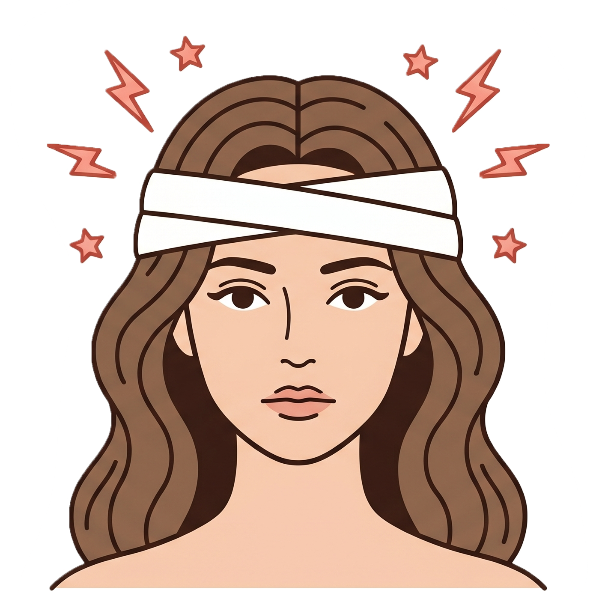

174°
🔔
今、どのくらい痛いですか？
0（痛みなし）〜 10（激痛）で選んでください
—
数字をタップしてください
痛みなし
激痛
どこが痛いですか？
複数選択できます

右側
左側
前頭部
後頭部
こめかみ
全体
どんな痛みですか？
任意
複数選択できます
💓 ズキズキ
🤯 締め付け感
😨 吐き気あり
☀️ 光がつらい
🔊 音がつらい
👁 目がかすむ
心当たりはありますか？
任意
原因として思い当たることを選んでください
😴 寝不足
😣 ストレス
🍷 お酒
💻 眼精疲労
💆 肩こり
🌧 天気
🌸 生理前後
🍽 食事
📝 その他
お薬は飲みましたか？
任意
服薬過多を防ぐために記録しておきましょう
💊
飲んだ
⏰
後で飲む
🚫
飲んでいない
−
1
＋
いつの頭痛ですか？
任意
過去の記録の場合は日時を変更してください
日付
時刻
✓
記録しました
お疲れ様でした。
今できるケアを確認してみましょう。
今できるケアを見る 💆
ホームに戻る
‹
次へ
🏠
ホーム
📅
カレンダー
✏️
記録
📊
分析
⚙️
設定